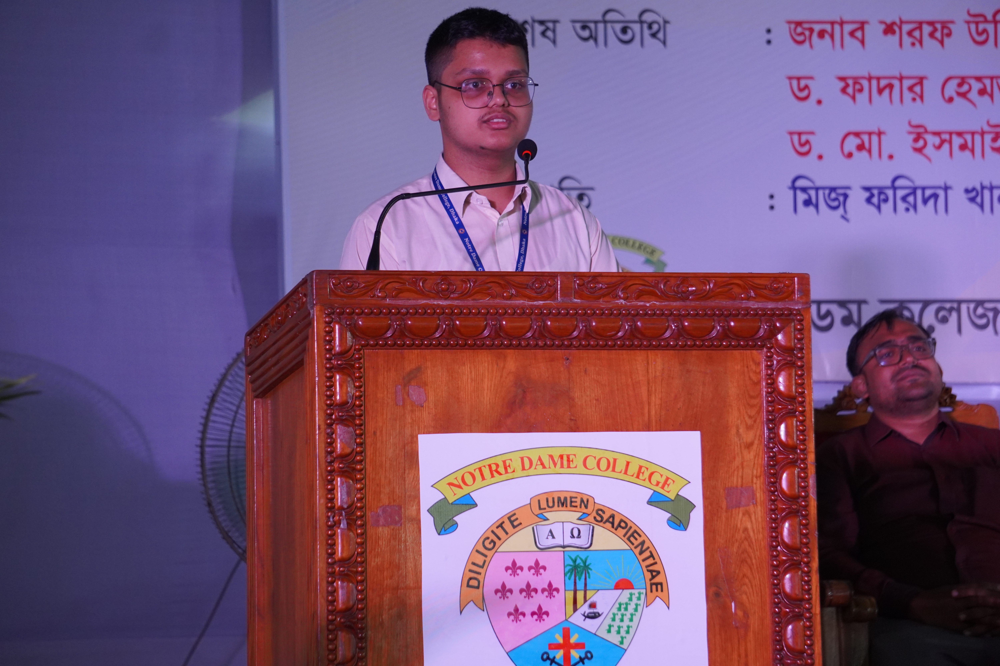
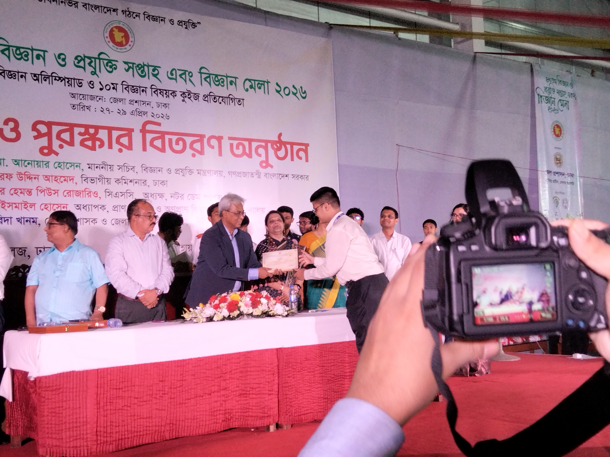
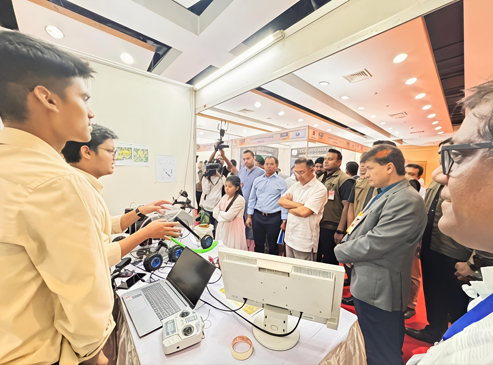
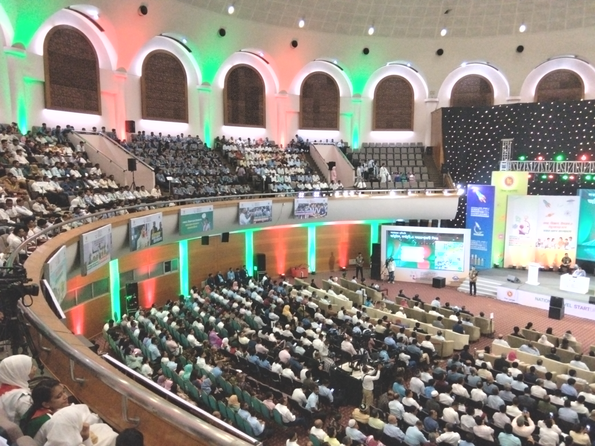
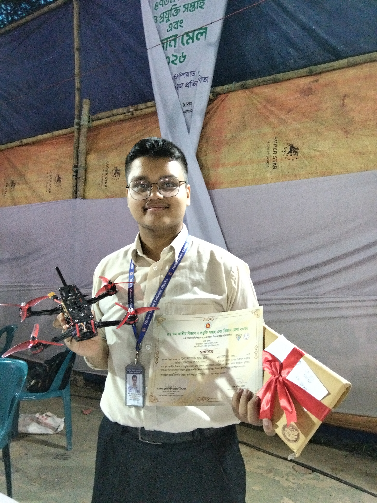

Md. Mahasin Al Muhi
Driven by an insatiable curiosity for how complex systems operate, I engineer solutions at the intersection of Physics, Electricity, and Control Logic. My work focuses on designing, coding, and physically constructing autonomous systems including UAVs, planetary rovers, and satellite control frameworks.

Md. Mahasin Al Muhi
Impact & Key Achievements
47th National Science Week Festival (District Round)
Notre Dame College, Dhaka
Contributed to organize the Dhaka District Round of the prestigious 47th National Science Week Festival at Notre Dame College, Dhaka. Representing the institution, I delivered the official keynote address before Md. Anwar Hossain, Secretary of the Ministry of Science and Technology of Bangladesh.
The address highlighted youth participation in technological innovation, system engineering, and national scientific advancement.


PM Recognition at 'Startup, Science Project & Idea Showcasing 2026'
Led the technical architecture and development of Agricure, an advanced agricultural intervention ecosystem combining cooperative aerial (UAV) and ground-rover units.
The system optimizes crop yield by analyzing soil states and identifying plant diseases early via a custom CNN model. The project garnered high praise from Prime Minister Tarique Rahman during our presentation in the National Round.
Explore System Specifications

Notre Dame Annual Science Festival 2025 & 35th GKC
Contributed to organize the nationwide Notre Dame Annual Science Festival 2025 & 35th GKC, mobilizing 18 project teams from Notre Dame College and guiding over 65 science project initiatives from across Bangladesh.
To democratize access to STEM, my co-lead and I engineered a sustainable web platform for the Notre Dame Science Club. By removing registration fees and building scalable infrastructure, we established a perpetual, zero-cost portal ensuring future students can compete nationally.


Co-Founder — Team Nokkhotropoth
Co-founded Team Nokkhotropoth, an R&D collective dedicated to producing autonomous systems while educating the next wave of engineers. Mentoring 15 students in UAV design, aerodynamic fundamentals, and flight control integration.
Developed a Dead-Reckoning Localization framework for UAVs in GPS-denied environments, securing 5th Place at the 47th National Science Week.
Visit Official Platform
Engineered Systems & Projects
A single-screen view of core technical architectures.
Autonomous dual-unit aerial drone and ground rover platform designed for targeted crop illness diagnosis, soil parameter testing, and precise agricultural yield optimization through onboard CNN inference models.
Dead-reckoning sensor fusion system capable of real-time flight coordinate estimation and stability management during total satellite navigation signal denial.
Architected a permanent, zero-cost online portal for nationwide STEM participation, engineered to endure as a legacy system of Notre Dame Science Club for future student developers.
"The line between fiction and reality is bridged by the desire to learn it."
Languages & Web
 Cloudflare
Cloudflare
IDEs, AI & Hardware
 PlatformIO
PlatformIO
 EasyEDA
EasyEDA
The Journey thus far
Parchment of Academic DistinctionArchive Record
Notre Dame College, Dhaka (NDC '27 Batch)
2025 — 2027Higher Secondary Certificate (HSC) — Science Stream (Ongoing)
Specializing in Advanced Physics, Higher Mathematics, and Electrical Systems. Engaged in scientific research and technical project leadership.
Notre Dame Science Club (NDSC)
Late 2025 — PresentOrganizer & Former Volunteer
Joined in late 2025 as a volunteer, contributing to national science events. Currently serving as an active organizer directing STEM festivals and web platform infrastructure.
St. Joseph Higher Secondary School (SJS '25 Batch)
Graduated Mid 2025Secondary School Certificate (SSC) — Science Stream
Passed with highest honors — GPA 5.00/5.00 with A+ in all Science Subjects. Built strong foundations in physics, chemistry, and mathematics.
Josephite Cultural Forum (JCF)
2024Joint Secretary
Served in student leadership, coordinating major school events, cultural showcases, and organizational operations.
St. Joseph Higher Secondary School
2017Admitted & Enrolled
Commenced secondary academic journey at St. Joseph, initiating early pursuits in science, logic, and creative forums.